Ediția {{VERSION}} (versiune de probă). Text în lucru, în română.
LegatorOCR transformă scanări sau poze de pagini într-un PDF curat, cu text care se poate căuta. Rezolvă aceeași problemă ca ScanTailor (separarea paginilor, îndreptarea, decuparea, curățarea), dar adaugă export PDF și OCR. Este scris în Rust, cu cod propriu, fiecare etapă fiind o tehnică de manual. Rulează local, fără cont și fără trimiterea paginilor pe internet. Licență: MIT.
Există două moduri de lucru, cu aceleași motoare dedesubt:
Interfața grafică (legatorocr-gui): adaugi pagini, vezi originalul și rezultatul alături, corectezi pagină cu pagină și exporți.
Linia de comandă (legatorocr): pentru loturi mari, pentru automatizare și pentru opțiuni pe care interfața nu le arată.
separă foile dublu-față în două pagini, îndreaptă paginile înclinate și decupează marginile;
curăță fundalul, petele, găurile de perforare, degetele de pe margine și liniile de formular;
scrie PDF (inclusiv PDF/A pentru arhivare) sau imagini, cu OCR în română și în alte 7 limbi;
produce și text simplu (.txt) și hOCR, și poate semna sau data PDF-ul.
Este o versiune de probă ({{VERSION}}). A fost rulată de autor și de asistentul său doar pe Linux; Windows, macOS și procesoarele arm64 nu au fost încercate de oameni.
Acuratețea OCR a fost măsurată pe 8 pagini bune dintr-o singură revistă românească, față de un text de referință produs de alt program, nu corectat de om. Nu o lua drept garanție pentru alte tipuri de tipar.
OCR-ul poate greși: verifică prin sondaj paginile importante.
Descarcă arhiva pentru sistemul tău de pe pagina de ediții (Releases) a depozitului chiuta/LegatorOCR. Fiecare arhivă are un fișier .sha256 pentru verificare.
| Sistem | Fișier | Note |
|---|---|---|
| Linux x86-64 sau ARM64 | .tar.gz | are nevoie de OpenGL 2+ și de X11 sau Wayland |
| Windows x86-64 | .zip | are nevoie de OpenGL 2+; în sesiuni RDP simple poate lipsi |
| macOS Apple-silicon sau Intel | .zip cu LegatorOCR.app | nesemnat: la prima pornire clic dreapta → Open, sau xattr -dr com.apple.quarantine LegatorOCR.app |
Poți și să compilezi din sursă: cargo build --release (necesită Rust 1.95 sau mai nou).
Programul are un motor OCR propriu, care funcționează fără instalare. Opțional poți instala Tesseract, un program separat, pe care LegatorOCR îl folosește automat când e prezent și are limba cerută:
Linux (Debian/Ubuntu): sudo apt install tesseract-ocr tesseract-ocr-ron
macOS: brew install tesseract tesseract-lang
Windows: winget install UB-Mannheim.TesseractOCR și adăugarea lui la PATH
Modelul românesc din pachetele apt și brew este varianta mică („fast”). Varianta „best” se descarcă manual și se indică cu --tessdata DIR. Care citește mai bine paginile tale nu a fost măsurat.
Rulează legatorocr --doctor. Afișează versiunea, motorul OCR nativ, Tesseract și modelele de limbă, apoi unelte auxiliare (pdftoppm, gs, qpdf, mutool). Rezultatul „missing” la o unealtă opțională nu e o eroare; mesajul de sub el spune dacă e nevoie de ea. Dacă ceva nu merge, copiază tot rezultatul comenzii într-un raport (vezi secțiunea 10).
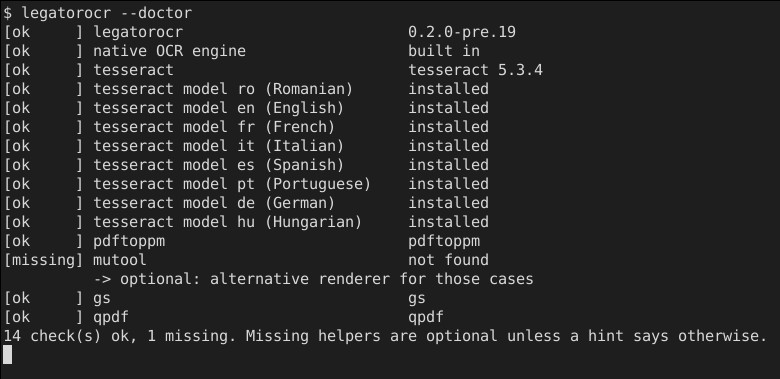
Rezultatul comenzii legatorocr --doctor (pre.20, Linux, într-un terminal real; la fel toate capturile de terminal din ghid, făcute cu xterm): „missing” la mutool este o unealtă opțională, nu o eroare.
Meniul Despre arată versiunea instalată (aici 0.2.0-pre.18). Captură din build-ul pre.18 pe Linux, interfața în română.
Pentru fiecare pagină, programul parcurge etapele de mai jos în această ordine. Analiza se face pe o copie de aproximativ 150 dpi, iar rezultatul se aplică apoi pe scanarea la rezoluția ei plină.
Orientare. Se detectează paginile culcate (sfert de tură), după literele paginii: o pagină cu poze sau cu puține cuvinte nu este rotită de acest test. Pentru direcția exactă se poate folosi Tesseract (OSD) sau rotirea manuală.
Separarea foii. O foaie landscape cu două pagini se taie la mijloc, la banda goală din centru. Poate fi automată, la mijloc sau oprită.
Îndreptarea. Se estimează unghiul de înclinare din liniile de text și pagina se rotește înapoi. Unghiul se poate fixa manual.
Caseta de conținut. Se găsește zona cu text și imagini; umbrele scannerului și praful sunt ignorate. Tot ce e în afara ei este repictat cu culoarea hârtiei.
Margini și dimensiune. Margini în milimetri, opțional dimensiune fixă a paginii sau aceeași dimensiune pentru toată cartea.
Îndreptarea rândurilor curbe (opțional). Pentru pagini de carte încărcate, cu rânduri curbate lângă cotor.
Iluminare (opțional). Egalizează fundalul inegal.
Curățarea și binarizarea. Elimină pete, găuri de perforare, degete, linii; apoi alb-negru, gri, color, mixt sau hibrid.
PDF și OCR. Se scrie PDF-ul (sau imaginile) și, dacă e bifat, stratul de text.
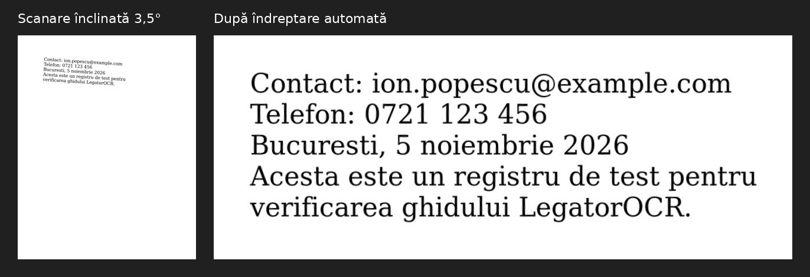
Îndreptarea automată: o scanare înclinată cu 3,5° (foaie de test generată de mine) și rezultatul; programul a măsurat -3,50°.
Fixează mai întâi rezoluția corectă (de obicei 300 dpi pentru text). Programul o citește din imagine dacă ea este între 150 și 1200; altfel presupune 300.
Alege un profil potrivit materialului (secțiunea 6) înainte de a umbla la setări individuale.
Prelucrează 10–20 de pagini într-o probă, verifică rezultatul, apoi pornește lotul mare.
Interfața marchează paginile „de verificat” (pagină goală, înclinare la limită, nimic găsit, conținut lipit de margine). Treci prin ele cu butonul „Următoarea”.
Fereastra are trei zone: lista de pagini în stânga, previzualizarea în centru și setările în dreapta. Meniul Fișier conține „Adaugă imagini”, „Adaugă un folder”, „Deschide proiect”, „Salvează proiectul”, „Exportă PDF” și „Exportă imaginile”. Limba interfeței (8 limbi) se schimbă din meniul Limbă.
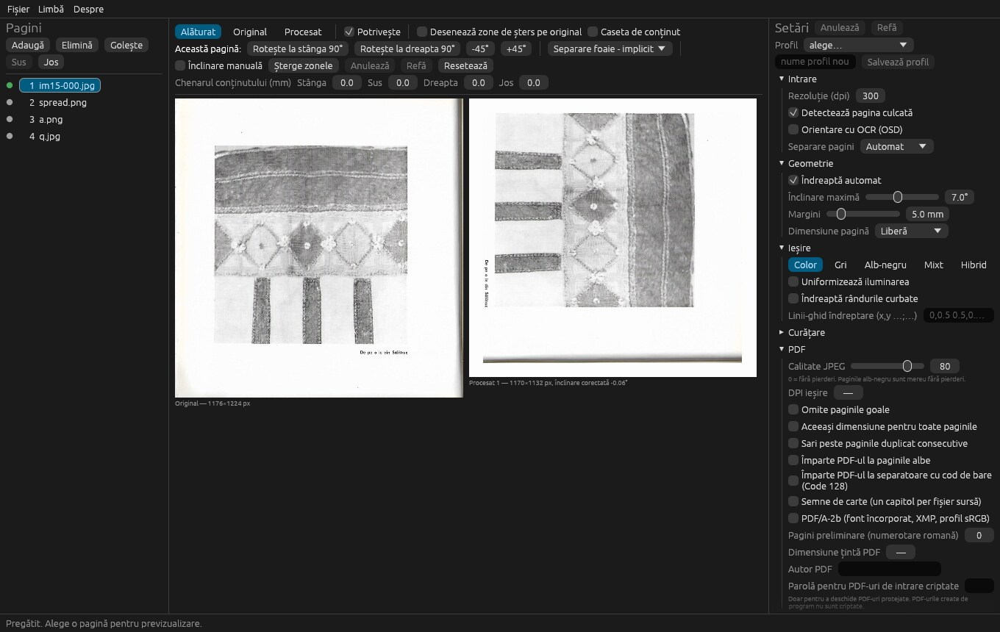
Fereastra principală: lista de pagini în stânga, originalul și pagina procesată la mijloc, setările în dreapta. Pagina din exemplu este o poză fără text, așa că detectarea paginii culcate a rotit-o greșit în pre.18 (corectat în pre.19, vezi mai jos). Captură pre.18 pe Linux.
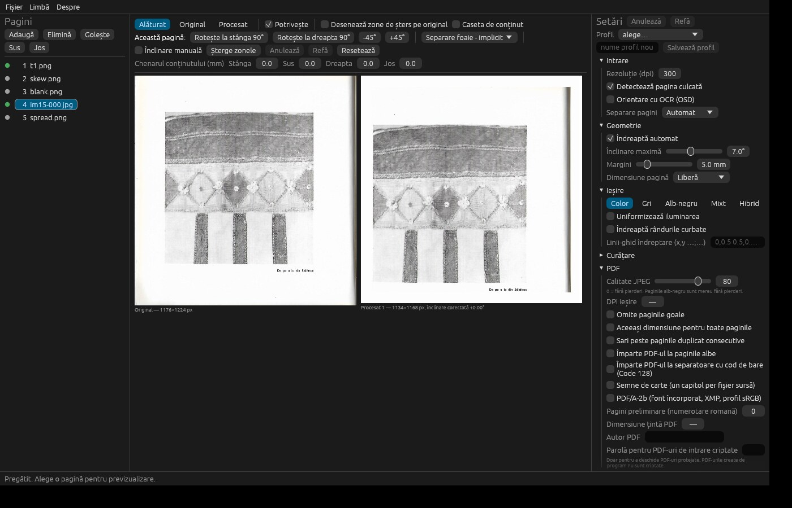
Aceeași pagină în pre.19, cu „Detectează pagina culcată” bifat: nu mai este rotită (procesat 1134×1168 px, înclinare +0,00°). Captură pre.19 pe Linux.
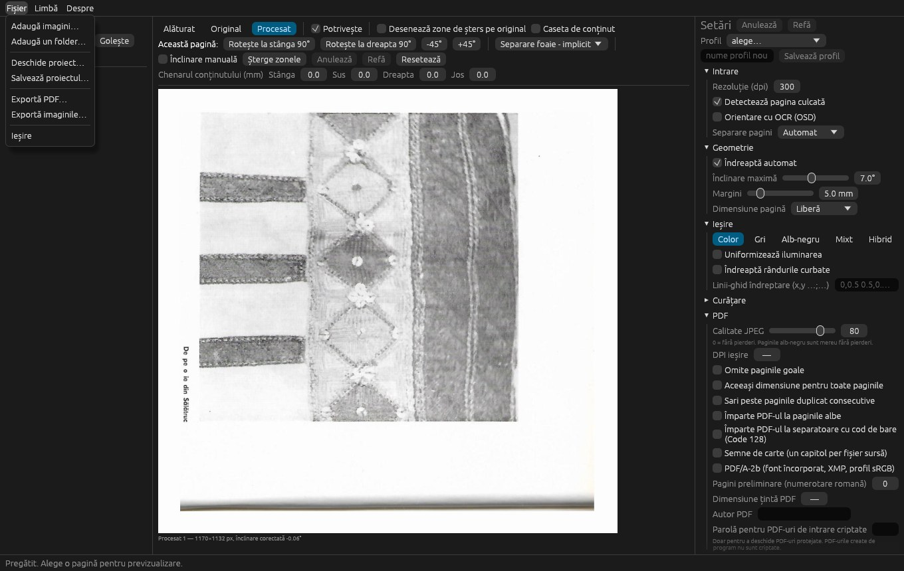
Meniul Fișier: adaugă imagini sau un folder, deschide și salvează proiectul, exportă PDF sau imagini.
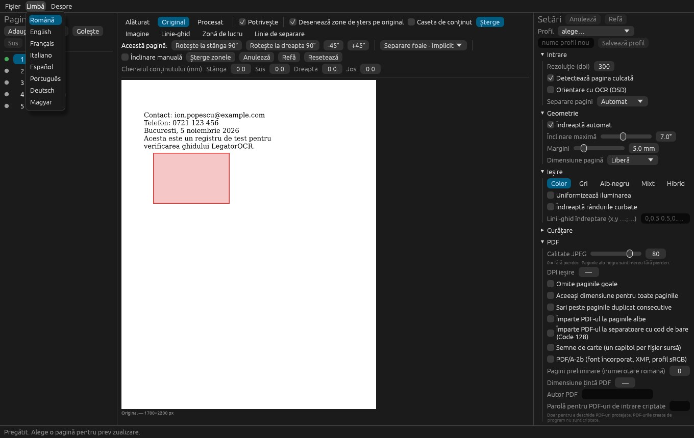
Meniul Limbă: cele opt limbi ale interfeței (română, engleză, franceză, italiană, spaniolă, portugheză, germană, maghiară).
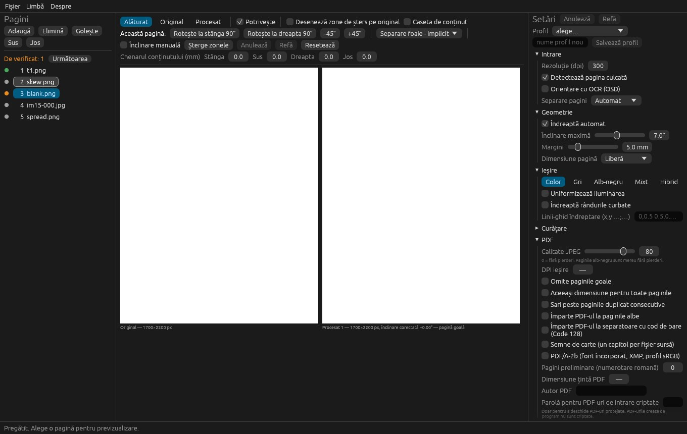
O pagină complet albă este marcată automat: punct portocaliu în listă și panoul „De verificat: 1” cu butonul „Următoarea”.
Trage în ea imagini, PDF-uri, arhive sau un folder, ori apasă „Adaugă”. Butoanele Sus/Jos schimbă ordinea, „Elimină” scoate pagina aleasă, „Golește” scoate tot. Ordinea din listă este ordinea din PDF.
Alăturat / Original / Procesat alege ce vezi. Zonele se desenează pe Original; caseta de conținut se corectează pe Procesat.
Potrivește mărește sau micșorează imaginea ca să încăpe. Glisorul de zoom (0,2×–4×) apare doar când Potrivește este debifat.
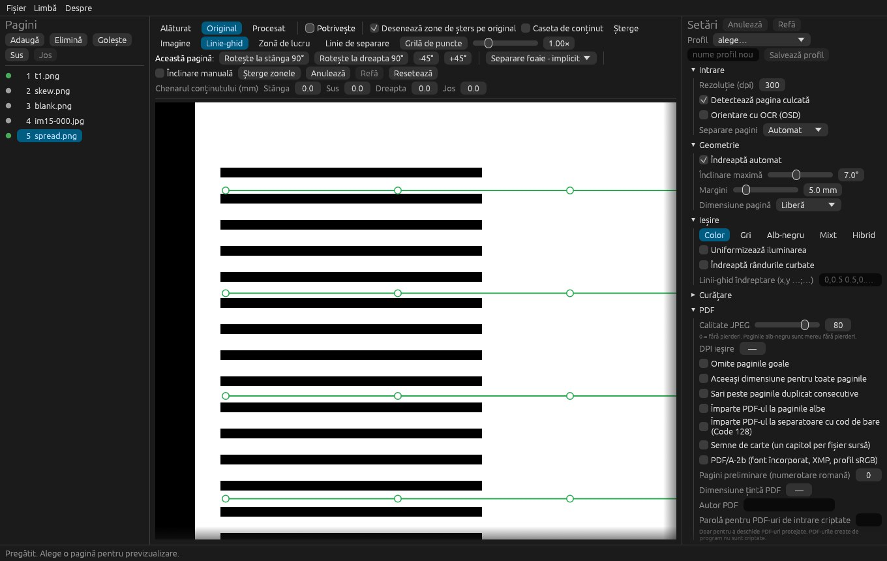
Cu „Potrivește” debifat apare glisorul de zoom (aici 1,00×).
Aici corectezi doar pagina aleasă: rotire la stânga sau la dreapta cu 90°, pași de ±45°, înclinare manuală, modul de separare a foii (implicit, automat, la mijloc, oprit), chenarul conținutului în milimetri (stânga, sus, dreapta, jos; valorile pozitive îl măresc) și „Resetează”. Anulează și Refă (Ctrl+Z, Ctrl+Y) merg pentru toate aceste comenzi, nu doar pentru zone.
Rotirea manuală blochează orientarea automată (din pre.18): după ce apeși un buton de rotire sau ±45°, pagina nu mai este rotită de detectarea paginii culcate sau de OSD, nici măcar la 0°. „Resetează” îi dă înapoi orientarea automată. Dacă o pagină cu poze e rotită greșit de la început, apasă rotirea de patru ori (sau debifează „Orientare cu OCR (OSD)” și „Detectează pagina culcată” din setări, la Intrare).
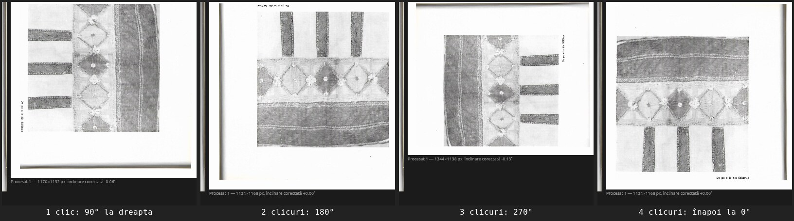
Patru clicuri la rând pe „Rotește la dreapta 90°”: 90°, 180°, 270°, apoi înapoi la 0°, fără sărituri. Captură pre.18 pe Linux. Pe Windows 11 nu am putut verifica.
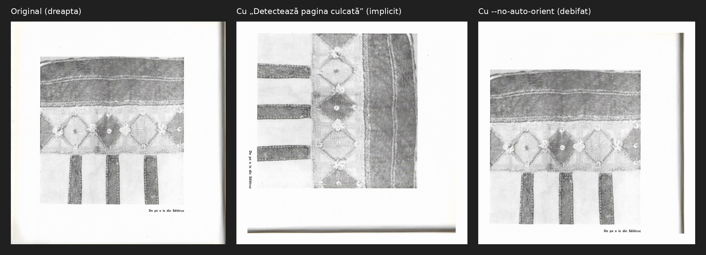
Aceeași pagină (pagina 15 din PDF-ul testerului) și aceeași setări, în afară de detectare: în pre.18, cu „Detectează pagina culcată” bifat (implicit), programul o rotea cu 90° deși originalul e drept (din pre.19–20 nu o mai rotește); cu --no-auto-orient (sau debifat în setări) iese dreaptă. Verificat în linia de comandă; în fereastră am văzut rotirea în pre.18 și lipsa ei în pre.19.
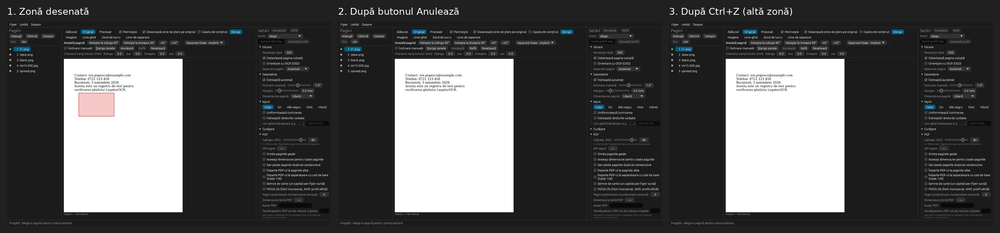
Anulează (butonul) și Ctrl+Z (cu fereastra în prim-plan) scot ultima zonă desenată. Verificat în fereastră.
Bifează „Desenează zone de șters pe original”; apar cinci tipuri de desen (Șterge, Imagine, Linie-ghid, Zonă de lucru, Linie de separare):
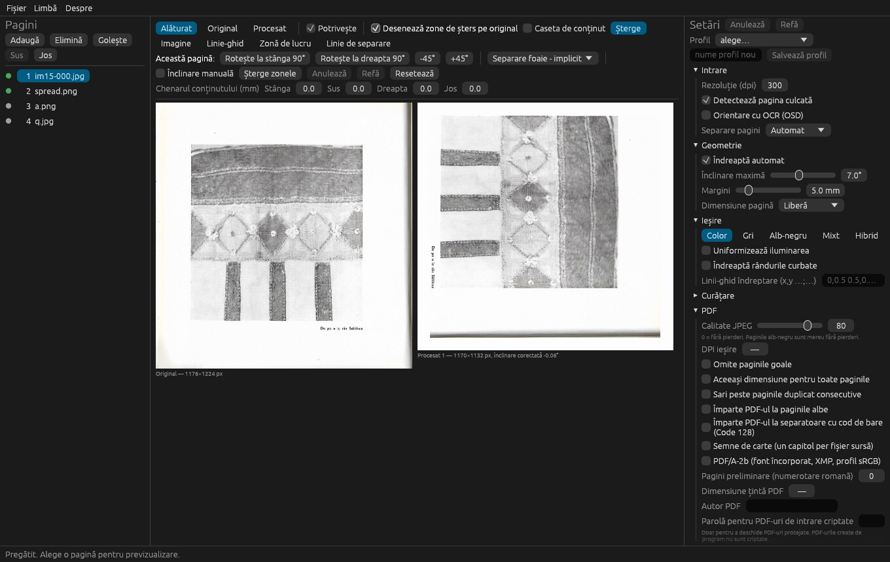
Cu „Desenează zone de șters pe original” bifat apar tipurile de zone: Imagine, Linie-ghid, Zonă de lucru, Linie de separare (și Șterge, tipul implicit).
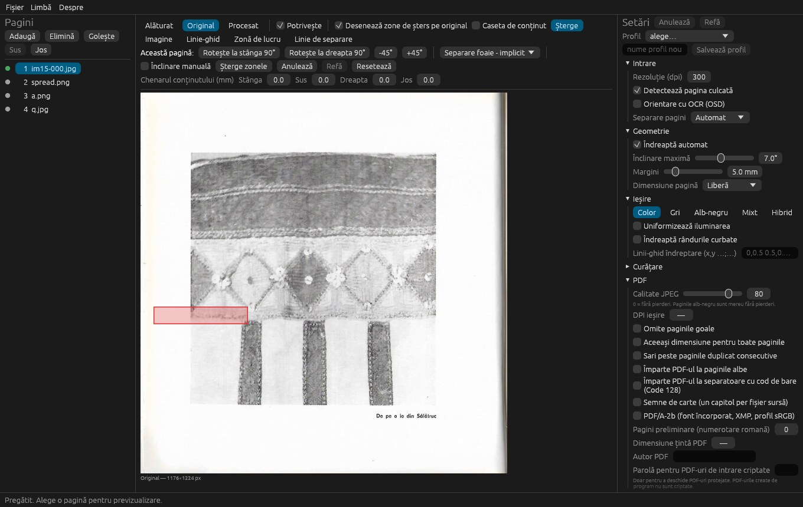
O zonă de șters (roșu) trasă cu mouse-ul pe original, în vizualizarea Original.
| Tip | Cum îl folosești | La ce serve |
|---|---|---|
| Șterge | Tragi un dreptunghi pe original. Clic dreapta pe el îl șterge. Tragi de un colț ca să îl redimensionezi. | Pată, ștampilă, nota cuiva, marginea cu umbră |
| Imagine | La fel ca „Șterge”. | Spune programului că zona e imagine, nu text (rămâne în culori în modul mixt) |
| Linie-ghid | Tragi liber de-a lungul unui rând curbat. Tragi un nod ca să-l muți; dublu-clic pe linie adaugă un nod, dublu-clic pe nod îl șterge; clic dreapta pe linie o șterge. | Îndreaptă pagina după rândurile pe care le-ai trasat |
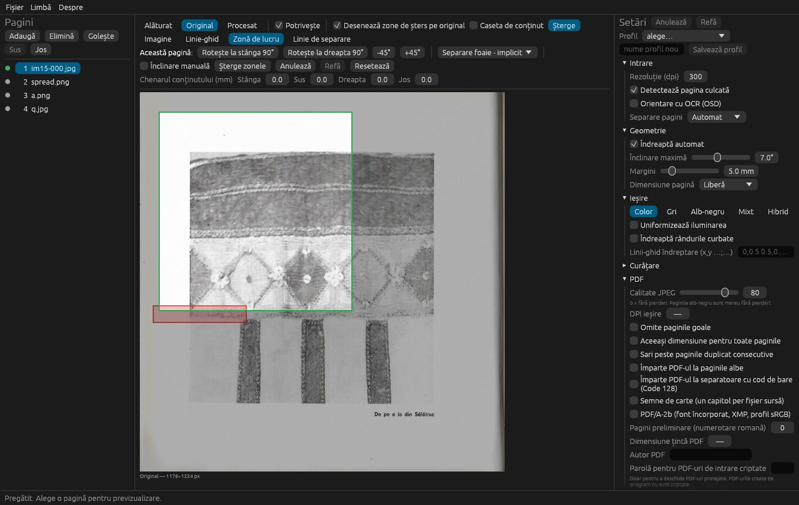
Zona de lucru (cadru verde): tot ce e în afara ei este înlăturat, iar zona rămasă se vede în pagina procesată. Mai are și o zonă de șters (roșu).
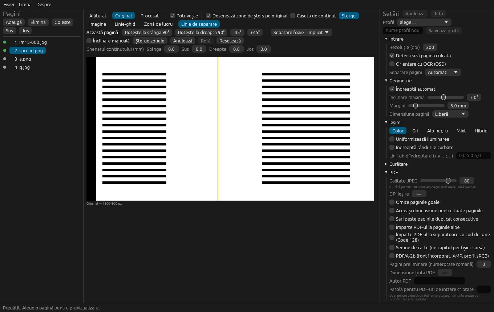
Linia de separare (portocalie) mutată cu mouse-ul pe o foaie dublă. Exemplul este o foaie de test sintetică, cu linii în loc de text.
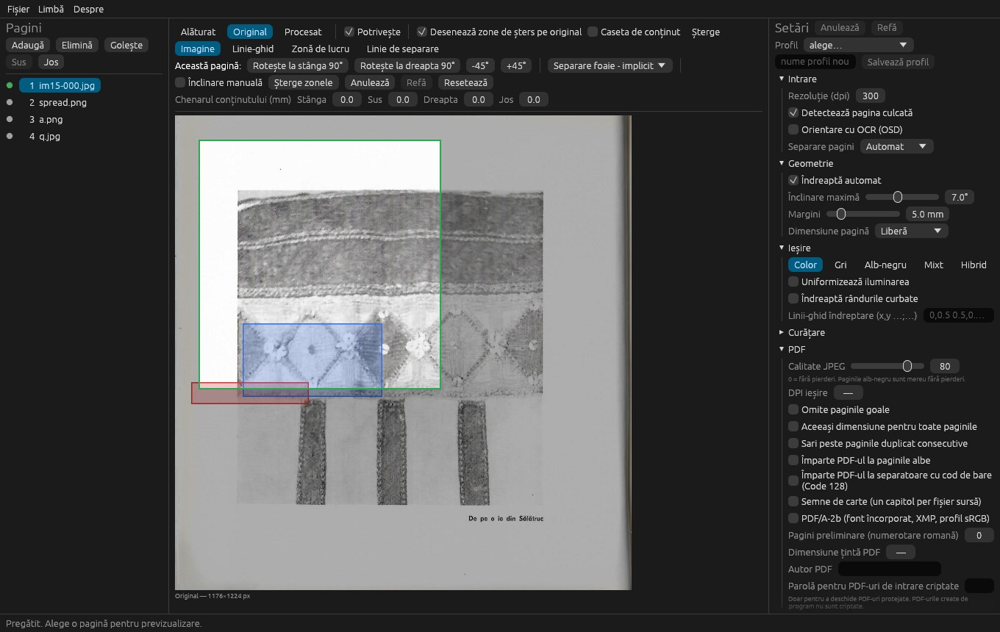
O zonă de imagine (albastră) desenată pe original. În modul Color nu schimbă nimic; efectul se vede în modul Mixt (figura următoare).
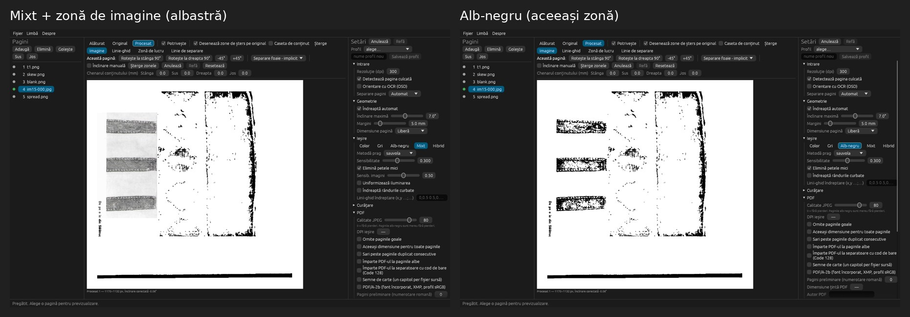
Aceeași pagină și aceeași zonă de imagine (albastră): în modul Mixt zona rămâne gri (stânga), în modul Alb-negru totul devine alb-negru (dreapta). Pagina apare rotită cu 90° de detectarea paginii culcate (vezi mai sus).
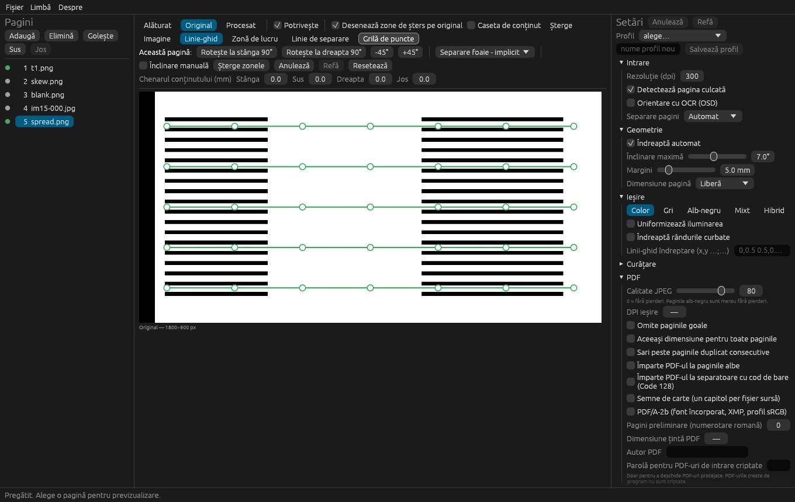
„Grilă de puncte” la Linie-ghid: 5 linii a câte 7 puncte, peste rândurile de text.
Grilă de puncte (la Linie-ghid) adaugă 5 linii a câte 7 puncte, peste care tragi punctele pe rândurile de text. Un al doilea clic pe buton nu mai adaugă aceeași grilă a doua oară. Dacă ai mutat deja puncte, o grilă nouă se adaugă pe lângă cea mutată.
Zonă de lucru (din ediția pre.18): tragi un dreptunghi pe original; tot ce e în afara lui este pictat cu culoarea hârtiei înainte de orice măsurare, deci o margine întunecată sau pagina vecină nu mai contează. Clic dreapta pe original îl elimină. În linia de comandă: --work-area X,Y,L,H (milimetri).
Linie de separare (din ediția pre.18): cu clic sau trăgând pe original muti linia verticală portocalie; foaia dublă se taie acolo, nu la mijloc sau la gutieră. Din pre.21 merge la orice rotire; la foile rotite cu 90° sau 270° linia taie orizontal și paginile ies una sub alta (pagina din stânga a originalului prima). Clic dreapta o elimină. În linia de comandă: --cut-at 0.45.
Caseta de conținut (bifa cu același nume) afișează pe pagina procesată un chenar verde. Tragi laturile ca să lărgești sau să înguste zona păstrată. La o foaie tăiată în două pagini, se schimbă doar pagina pe care tragi chenarul.
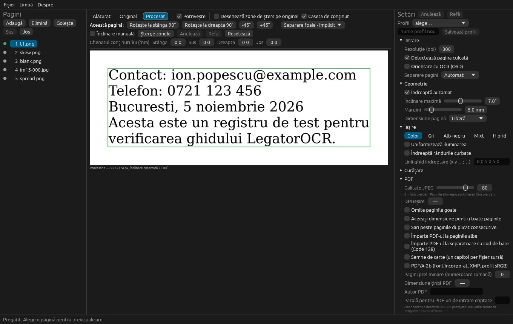
Caseta de conținut (chenar verde) pe pagina procesată.
Trei lucruri pentru foi fotografiate cu mâna:
--cut-angle GRADE.--keystone-v și --keystone-h (procente).page1.CHEIE = VALOARE / page2.CHEIE = VALOARE sub [sheet]. Un clic pe o pagină procesată o selectează (cadru albastru): ieșirea (gri, alb-negru, mixt), curățarea, corecția trapezoidală, caseta verde și creioanele OCR lucrează apoi doar pe ea. Zonele OCR desenate se păstrează pe pagina respectivă (page1.page_ocr_zones, page_ocr_ignore).Bara de jos a previzualizării cuprinde caseta de conținut, creioanele OCR și Auto creion OCR (separat pentru pagina stângă și cea dreaptă): pune zona OCR pe conținutul acelei pagini.
Înclinarea manuală se face pe pagina selectată (stânga sau dreapta) a unei foi tăiate: fiecare pagină își poate avea propriul unghi (page1.page_skew, page2.page_skew).
Zoom: în bara de jos, A+ / A- măresc sau micșorează toată interfața (și Ctrl + / Ctrl −), iar Auto o potrivește după mărimea ferestrei. Fereastra pornește mărită, cu zoom automat, ca textul să se vadă mare și să umple ecranul; alegerea se păstrează.
Dimensiunile de pagină includ acum A2–A6, B3–B6, Letter, Legal și Tabloid (--page-size primește aceleași nume). Creioane OCR pe paginile procesate: verde (zonă OCR), roșu (zonă ignorată), mov (tabel, citit ca un bloc, rând cu rând; --ocr-zone X,Y,W,H#table).
Se grupează pe secțiuni: Intrare, Geometrie, Ieșire, Curățare, PDF, OCR, plus profilele. Secțiunea 6 explică ce face fiecare.
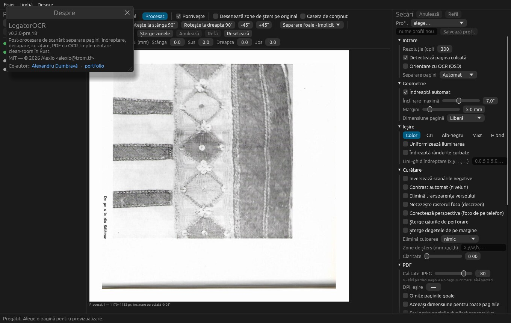
Secțiunea Curățare din setări, desfăcută: inversare scanări negative, contrast automat, perspectivă, ștergerea găurilor de perforare, zone de șters ca numere.
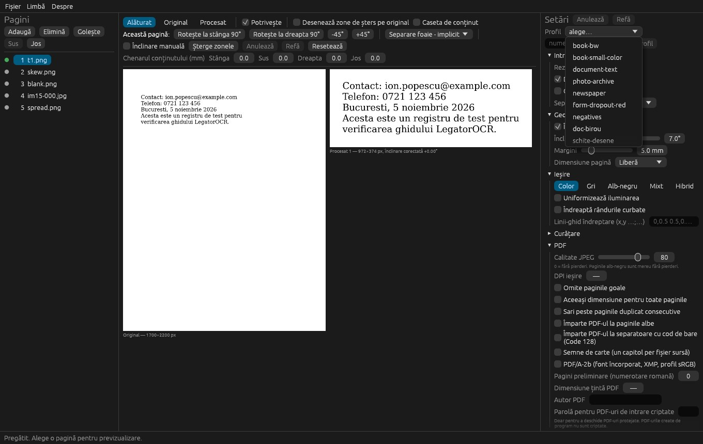
Lista „Profil” din setări (profilurile integrate; ale tale apar în același loc după „Salvează profil”).
Butonul Toate opțiunile… din bara de sus deschide o fereastră cu toate opțiunile liniei de comandă (peste 200), grupate pe teme: pagini și ordine; îndreptare, decupare și curățare; ieșiri (PDF, imagini, documente); OCR și text; arhivare, semnare și verificare; căutare și comparare; loturi, sistem și module. Lista este citită chiar din programul de linie de comandă livrat odată cu fereastra, deci se potrivește mereu cu ediția pe care o ai.
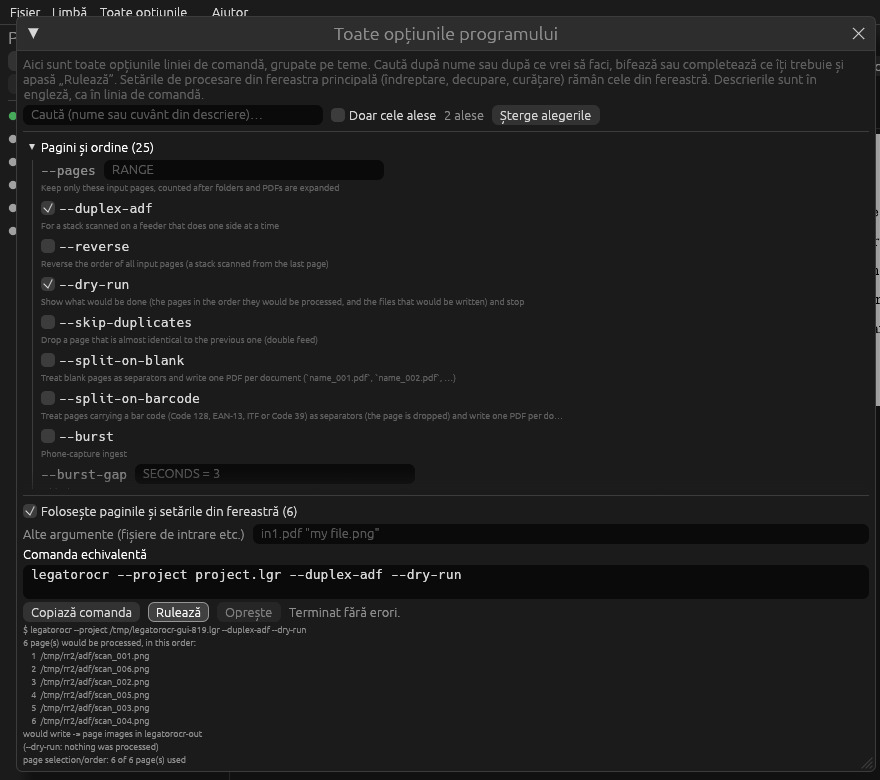
Fereastra „Toate opțiunile”, cu grupul „Pagini și ordine” deschis, --duplex-adf și --dry-run bifate și rezultatul rulării: ordinea în care ar fi procesate cele șase pagini ale stivei (pagini de test făcute de mine).
Caută după nume (pdf, dry) sau după un cuvânt din descriere; grupurile cu rezultate se deschid singure. „Doar cele alese” arată ce ai bifat sau completat.
Casetele goale nu se trimit: o opțiune cu valoare intră în comandă doar când scrii ceva (sau alegi din listă). Butonul Alege… deschide dialogul de fișiere sau de foldere. La opțiunile care se pot repeta (de exemplu --erase) scrii câte o valoare pe linie.
Folosește paginile și setările din fereastră (bifat implicit): comanda primește paginile încărcate, cu ajustările fiecăreia, printr-un proiect temporar. Setările de procesare din fereastra principală (îndreptare, decupare, curățare) au prioritate; aici completezi ieșirile și funcțiile speciale. Debifează pentru comenzi fără pagini (--doctor, --verify-sums) sau scrie fișierele de intrare în „Alte argumente”.
Comanda echivalentă se actualizează pe măsură ce alegi; o poți copia și folosi în terminal sau în scripturi. Rulează o execută și arată rezultatul dedesubt; Oprește o întrerupe. Căile relative sunt față de folderul tău personal.
Descrierile opțiunilor sunt în engleză, ca în linia de comandă; restul ferestrei este în limba aleasă.
Meniul Ajutor are legătura către acest ghid: Ghid de utilizare (online, mereu la zi) deschide ultima versiune publicată pe legatorocr.chiuta.ro, iar Ghid din această ediție (apare când fișierul PDF este lângă program, ca în arhivele publicate) deschide copia livrată odată cu programul. Ghidul este refăcut la fiecare ediție, iar publicarea unei ediții se oprește dacă ghidul nu amintește versiunea ei.
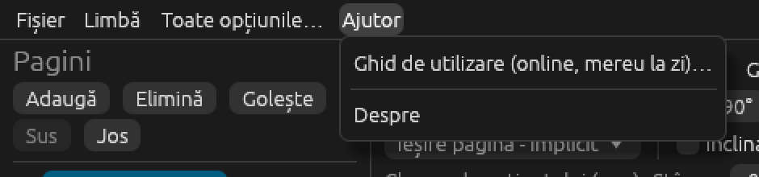
Verificat: fereastra, căutarea, bifarea, rularea unei comenzi cu paginile din fereastră (captura de mai sus) și deschiderea meniului Ajutor, pe Linux, într-un ecran virtual. Neverificat: Windows, macOS și arm64; deschiderea efectivă a ghidului într-un browser (am verificat doar meniul); dialogurile „Alege…”; traducerile textelor noi ale ferestrei (scrise automat).
O colecție adună ziare, reviste, cărți și altele într-un singur fișier .lgrcol (JSON). Țineți-l în folderul cu scanările: căile din fișier sunt scrise relativ la el când ținta se află sub un folder comun, deci folderul poate fi mutat sau copiat. Fiecare element are tip, titlu, număr sau volum, dată sau an, limbi, surse (imagini, un folder cu imagini, un PDF, un proiect .lgr salvat), PDF-ul rezultat, un profil, o stare (de făcut, procesat, OCR gata, verificat), numărul de pagini, etichete și note.
legatorocr collection new Archive/ --name "Old papers"
legatorocr collection add Archive/old_papers.lgrcol --folder Archive/scans
legatorocr collection list Archive/old_papers.lgrcol
legatorocr collection run Archive/old_papers.lgrcol --out Archive/pdf
legatorocr collection search Archive/old_papers.lgrcol "Scînteia"add --folder: fiecare PDF, proiect .lgr și subfolder cu imagini devine un element. Titlul, tipul, data și numărul sunt ghicite din nume: scinteia_tineretului_1977_09_8801.pdf dă ziar, „Scinteia Tineretului”, 1977-09, nr. 8801. E doar o presupunere (numele de fișiere nu au diacritice; tipul se sprijină pe câteva cuvinte-cheie și pe numerotare: o dată completă sau un număr de 500 sau mai mare e luat drept ziar); corectați-o în fereastră.
run procesează elementele cu starea „de făcut”, fiecare cu profilul lui (altfel cel al colecției, altfel setările implicite), prin același cod ca linia de comandă și fereastra (run_export). Un element care eșuează (sursă lipsă, profil necunoscut, pagină ilizibilă) e marcat cu motivul, iar celelalte merg mai departe; fișierul colecției și indexul se salvează după fiecare element, deci o anulare sau o cădere nu pierde ce era gata. PDF-urile se scriu lângă fișierul colecției sau în --out. Cu OCR (implicit; --no-ocr îl oprește) textul recunoscut al fiecărei pagini intră în NUME.lgrindex; limba OCR vine din limbile elementului, altfel din ocr_langs al profilului, altfel româna. Un element eșuat nu e reîncercat decât cu --retry-failed sau --item ID.
search caută în acest index. Majusculele, diacriticele și ortografia veche nu contează (Scînteia găsește Scânteia, sînt găsește sunt). Afișează elementul, pagina și un fragment: întâi paginile cu cuvintele alăturate, apoi (marcate) paginile care au toate cuvintele, dar depărtate.
Fereastra Colecții… (meniul Fișier sau Ctrl+K): un tabel cu litera tipului, titlu, număr/dată, pagini și o etichetă de stare (culoare și text), cu filtrare și sortare; detaliile în dreapta; Adaugă fișiere, Adaugă folder, Procesează selecția, Procesează tot ce așteaptă (cu progres și Anulare), Deschide PDF, Arată folderul; o casetă de căutare în toată colecția, cu rezultate pe care se poate apăsa. Textele ei există în cele 8 limbi ale ferestrei.
Verificat: teste unitare (ghicirea numelui, căi relative, fișiere deteriorate, căutare cu diacritice, un lot care merge mai departe după o eroare și după un panic, anulare), un test al programului real și o rulare cu Tesseract real pe două pagini sintetice, inclusiv după mutarea folderului.
Limite: fereastra a fost scrisă și compilată, dar nimeni nu a văzut-o pe ecran și nu a apăsat în ea (doar filtrul, sortarea și textele ei au teste unitare); se caută doar în textul recunoscut de collection run (un PDF care are deja strat de text nu e indexat); tot indexul se citește în memorie (colecții de zeci de mii de pagini nu au fost măsurate); un rezultat arată pagina, dar vizualizatorul PDF se deschide la pagina 1; două programe care scriu același fișier deodată: ultimul câștigă; fereastra folosește Tesseract din PATH, nu calea din fereastra principală; regula ortografiei vechi e cea din --ocr-modern-spelling și poate uni cuvinte diferite (mână / mină).
Sintaxa generală: legatorocr INTRARI... [opțiuni]. Intrările pot fi imagini (PNG, JPEG, TIFF, BMP), PDF-uri scanate sau un folder. legatorocr --help listează toate opțiunile; --list-profiles arată profilele. Opțiunile din rețete sunt verificate automat înaintea fiecărei ediții, deci există cu adevărat; rețetele în sine nu au fost încercate toate pe material real.
legatorocr scans/*.png --profile book-bw --ocr --lang ron --pdf carte.pdf --pdfa --txt carte.txt -o pages--pdfa scrie PDF/A-2b pentru arhivare, iar --txt salvează și textul. -o pages este folderul pentru imaginile procesate.
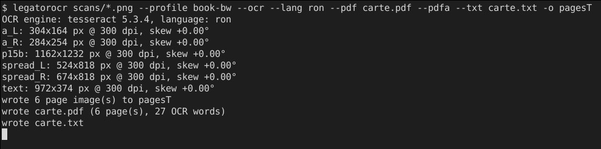
Rețeta pe 4 fișiere de test: 6 pagini în carte.pdf. Cu --pdfa programul scrie PDF/A-2b.
legatorocr photos/*.jpg --profile phone-photos --pdf pagini.pdf -o pagesProfilul uniformizează lumina, corectează perspectiva, șterge fundalul din jurul paginii (--trim-background), taie cărțile deschise la mijloc, lărgește intervalul de înclinare și scoate degetele fără să atingă textul. O pagină care iese fără text este citită a doua oară doar pe conținutul ei. Pentru pagini uniforme pe A4, cu textul mărit, folosește --profile phone-photos-a4. Mai multe poze ale aceleiași pagini se pot combina întâi cu --fuse-frames (ajută la zgomot puternic; la zgomot moderat nu). Opțiunea primește un fișier de ieșire: legatorocr poza1.jpg poza2.jpg poza3.jpg --fuse-frames pagina.png, apoi prelucrezi pagina.png ca de obicei; prima poză este referința.
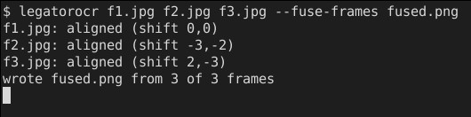
--fuse-frames cu trei poze ale aceleiași pagini: le aliniază și scrie fused.png din 3 din 3 cadre.
legatorocr scans/*.png --profile registre-manuscrise --ocr --lang ron --pdf registru.pdf --pdfa --checksums --archive-package registru-arhiva -o pages
legatorocr --verify-sums registru-arhiva/SHA256SUMS.txtPachetul păstrează originalele, proiectul, cuvintele OCR cu încredere, ieșirile și un RUN.txt care spune cum se reia lucrarea. Pentru copii pe alte discuri: --backup-from și --backup-to.
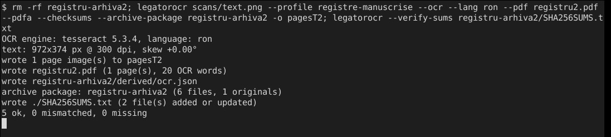
Pachetul de arhivă creat și verificat: „5 ok, 0 mismatched, 0 missing”.
legatorocr scan.png --ocr --lang ron --redact email,phone-ro --format none --pdf redactat.pdfCuvintele găsite sunt înnegrite în imagine și scoase din text. Verifică rezultatul cu ochiul: un cuvânt pe care OCR nu l-a recunoscut nu este ascuns.
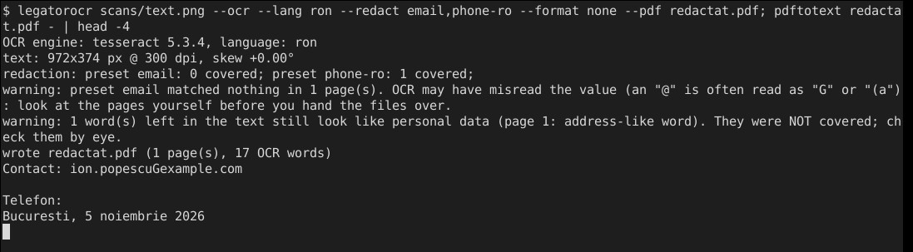
Rezultat real: numărul de telefon a fost ascuns, dar adresa de e-mail NU, pentru că OCR a citit „@” ca „G” (ion.popescuGexample.com) și modelul de e-mail nu s-a potrivit. De aceea trebuie să verifici rezultatul cu ochiul. Din pre.20 programul scrie la sfârșit câte cuvinte a acoperit fiecare tipar și avertizează când un tipar nu a găsit nimic sau când au rămas în text cuvinte care par adrese sau numere lungi, exact ca în captura de mai sus.
legatorocr scans/*.png --shard 1/3 --profile book-bw --pdf part1.pdf -o pages1
legatorocr --merge-pdf part1.pdf part2.pdf part3.pdf --pdf carte.pdfRulează aceeași listă pe fiecare mașină, cu alt --shard. Pentru memorie mică: --max-memory 500. Pentru fișiere necunoscute sau ostile: --isolate-decoders.
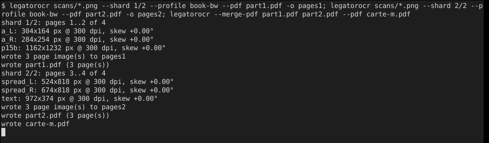
Lotul împărțit în două (--shard 1/2 și 2/2) și unit apoi cu --merge-pdf.
LEGATOROCR_P12_PASS=... legatorocr --sign-pdf registru.pdf --sign-p12 certificat.p12 --sign-name "Nume"
legatorocr --verify-pdf-signatures registru.signed.pdf --sign-ca ca.pemNivelul juridic al semnăturii este cel al certificatului tău. Parola certificatului se dă prin variabila de mediu, nu pe linia de comandă. Marca de timp (--sign-timestamp) a fost verificată doar cu o autoritate locală prin HTTP, nu cu una reală prin HTTPS.
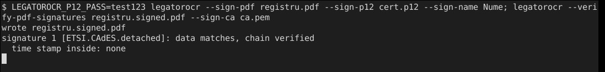
Semnarea și verificarea cu un certificat de test creat de mine (nu un certificat real). „time stamp inside: none”: n-am cerut marcă de timp.
Multe scanere cu alimentator trec stiva o dată pe fiecare față: întâi toate fețele (1, 3, 5…), apoi toate versourile, în ordine inversă (6, 4, 2). Fișierele ies în ordinea scanării, nu a cărții. --duplex-adf le pune în ordinea de citire: față 1, verso 1, față 2, verso 2… Numărul de pagini trebuie să fie par (altfel programul se oprește cu un mesaj).
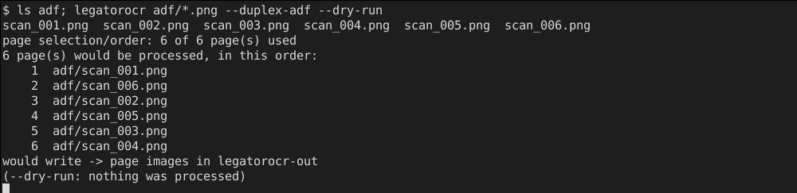
Șase fișiere în ordinea scanării (scan_001 … scan_006). --dry-run arată ordinea în care ar fi procesate și ce fișiere s-ar scrie, apoi se oprește fără să proceseze nimic: scan_006 ajunge pe locul 2, scan_005 pe locul 4.
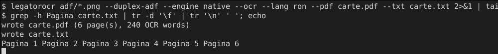
Aceeași comandă fără --dry-run, cu OCR nativ: textul iese în ordinea „Pagina 1 … Pagina 6” (pagini de test făcute de mine, nu o carte reală).
Alte opțiuni de ordine și selecție (se pot combina; intervalul se aplică numerotării fișierelor de intrare, de la 1):
--pages 1-10,15,20-: păstrează doar paginile indicate; 20- înseamnă „de la 20 până la capăt”. Merge și pe pagini luate din PDF-uri sau din foi TIFF cu mai multe pagini.
--reverse: inversează ordinea (stivă scanată de la ultima pagină).
--dry-run: verifică un lot mare înainte de rularea lungă.
Verificat: ordinea și intervalul cu teste automate și cu șase pagini de test; nu am încercat un scaner real cu alimentator. Opțiunile se pot alege și din fereastră, la „Toate opțiunile…” (secțiunea 4).
Pentru fișierele .txt și .docx (stratul de text din PDF, hOCR și JSON păstrează cuvintele citite, neschimbate):
--clean-text: ș și ț cu virgulă dedesubt, cuvinte rupte la capăt de rând lipite (cu cratimă păstrată când cele două jumătăți sunt cuvinte din listă și lipirea simplă nu e), ghilimele tipografice, spații lângă punctuație. --cedilla scrie în schimb ş și ţ, pentru programe și fonturi care nu cunosc literele cu virgulă.
--find-replace FIȘIER: propriile tale corecturi, câte una pe linie, greșit => corect. Rândurile care încep cu # sunt comentarii. Se potrivesc doar cuvinte întregi (Ion => Ioan nu atinge „Ionescu”) și se aplică în ordinea din fișier, după --clean-text. Utile pentru nume proprii, prescurtări sau o ștampilă pe care motorul o citește mereu la fel de greșit.
--drop-running-heads: lasă afară antetele, subsolurile și numerele de pagină tipărite: prima sau ultima linie a unei pagini care se repetă (cifrele nu contează) pe cel puțin jumătate din pagini; trebuie cel puțin patru pagini. Liniile scoase sunt listate pe stderr, ca să vezi ce a plecat.
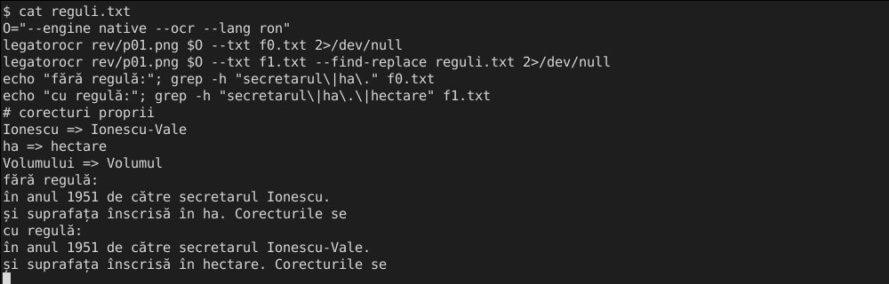
Fișierul de reguli (primul bloc) și aceleași două linii citite de pe pagina de test fără și cu --find-replace: „Ionescu” a devenit „Ionescu-Vale” și „ha” a devenit „hectare”.
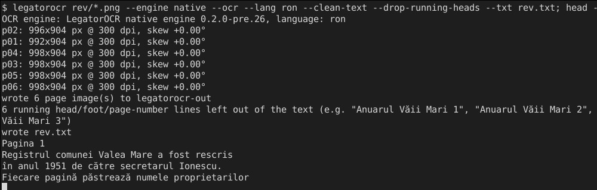
Pe șase pagini de test cu antetul „Anuarul Văii Mari” și un număr, programul a scos șase linii de antet; textul începe direct cu „Pagina 1”. Atenție: regula scoate orice prima/ultimă linie care se repetă, deci la o carte în care ultima linie a fiecărei pagini seamănă (de exemplu „Poziția în raft: 14”) ar pleca și acele linii; de aceea sunt listate. Funcția a fost verificată cu teste și pe câteva pagini, nu pe un set mare de cărți.
Rețetele complete sunt în docs/tasks/ din depozit, în engleză și română (verificare de document cu --verify-document și --mrz, copie de arhivă, lot mare).
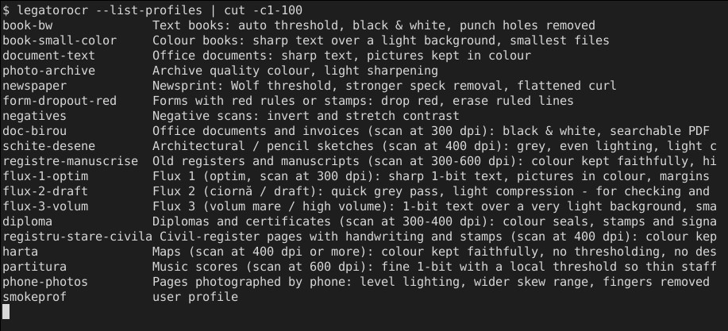
legatorocr --list-profiles. Ultima linie (smokeprof) este un profil de test al meu, nu face parte din program.
Un profil este un set de setări gata făcut pentru un tip de material. Se alege din secțiunea „Profil” (interfață) sau cu --profile NUME (linie de comandă). Ai propriile profiluri: configurezi setările, scrii un nume și apeși „Salvează profil”.
| Profil | Pentru ce |
|---|---|
book-bw | cărți cu text, alb-negru, găuri de perforare scoase |
book-small-color | cărți color, text clar pe fundal deschis, fișiere mici |
document-text | documente de birou, imagini păstrate color |
photo-archive | fotografii, calitate de arhivă |
newspaper | ziare: prag Wolf, pete eliminate mai puternic |
form-dropout-red | formulare cu linii sau ștampile roșii |
negatives | scanări negativ |
phone-photos | poze de pe telefon: perspectivă corectată, fundalul din jurul paginii șters, cărți deschise tăiate la mijloc, degetele scoase |
phone-photos-a4 | ca phone-photos, dar fiecare pagină pe o foaie A4, cu textul mărit să umple foaia (și paginile cu puține rânduri) |
registre-manuscrise | registre și manuscrise vechi (300–600 dpi), culori păstrate |
schite-desene | schițe și desene în creion (400 dpi) |
doc-birou, flux-1-optim, flux-2-draft, flux-3-volum | fluxuri pentru documente de birou, de la calitate maximă la volum mare |
diploma, registru-stare-civila, harta, partitura | neverificate pe probe reale |
Lista completă o dau --list-profiles.
| Setări | Ce face | Când o schimbi |
|---|---|---|
| Rezoluție (dpi) | cu cât sunt scanate paginile | când imaginea nu are dpi în antet; pentru text 300 |
| Îndreaptă automat / înclinare maximă | limita unghiului corectat automat | când o pagină care iese „la limită” e de fapt strâmbă |
| Margini, dimensiune pagină, aceeași dimensiune | marginile în mm; pagină liberă, personalizată sau identică pentru toată cartea | pentru cărți cu formate amestecate |
| Mod de ieșire | color, gri, alb-negru, mixt (text 1-bit + imagini color), hibrid (+ fundal cu rezoluție mică) | alb-negru pentru text pur; mixt pentru text cu poze |
| Metodă prag | Sauvola (implicit), Wolf, Niblack, NICK, Bradley, Otsu sau automat | când textul iese pâlit sau plin de pete; auto încearcă mai multe pe fiecare pagină |
| Sensibilitate | sensibilitatea metodei Sauvola pentru ieșirea alb-negru | implicit 0,3; schimb-o în pași mici și compară rezultatul pe aceeași pagină |
| Sensib. imagini | cât de ușor e socotită o zonă drept imagine | în modul mixt/hibrid |
| Elimină petele mici | forța curățării de pete (0,25–4; 1 = implicit) | micșorează-o dacă dispar puncte sau diacritice; mărește-o dacă rămân pete |
| Dewarp (rânduri curbe) | îndreaptă rândurile arcuite lângă cotor | pentru cărți groase; se sare dacă nu se vede o curbură clară |
| Uniformizează iluminarea | egalizează fundalul | pentru poze cu umbră sau iluminare inegală |
| Calitate JPEG | 0 = fără pierderi; paginile alb-negru sunt mereu fără pierderi | pentru fișiere mai mici (sugestie: încearcă 80–90 și compară mărimea și aspectul) |
| DPI ieșire | micșorează imaginea de ieșire la acest dpi (“—” = nu micșora) | pentru PDF mai mici; paginile sub 250 dpi sunt mărite automat înainte de OCR, deci o reducere prea mare nu ajută recunoașterea |
| PDF/A-2b | PDF pentru arhivare, cu font și profil de culoare incluse | pentru depunere în arhive; nu a fost verificat cu veraPDF pe ieșirile programului |
Aceste câmpuri există în setări, dar este mai ușor să desenezi pe original (secțiunea 4):
Zone de șters și Zone imagine: x,y,l,h în milimetri de la colțul din stânga sus al paginii. Mai multe zone se separă cu punct-virgulă: 10,20,30,40;50,60,20,20. Cel mult 64; lățimea și înălțimea trebuie să fie pozitive. Dacă forma e greșită, câmpul se face roșu.
Linii-ghid îndreptare: x,y x,y x,y;x,y x,y x,y, cu fracții între 0 și 1 din pagina deja îndreptată (0,0 = colțul din stânga sus). Fiecare linie are cel puțin două puncte; în total cel mult 64 de linii.
La linia de comandă: --erase X,Y,W,H (repetabil) și --dewarp-guide "X,Y X,Y …" (repetabil).
Bifa „Text căutabil (OCR) în PDF” (sau --ocr în linia de comandă) adaugă un strat de text nevăzut peste imagine. Limba se alege din „Limbi recunoscute” (sau --lang ron); poate fi combinată, de exemplu ron+eng. Limbile interfeței și ale motorului propriu: română, engleză, franceză, italiană, spaniolă, portugheză, germană, maghiară.
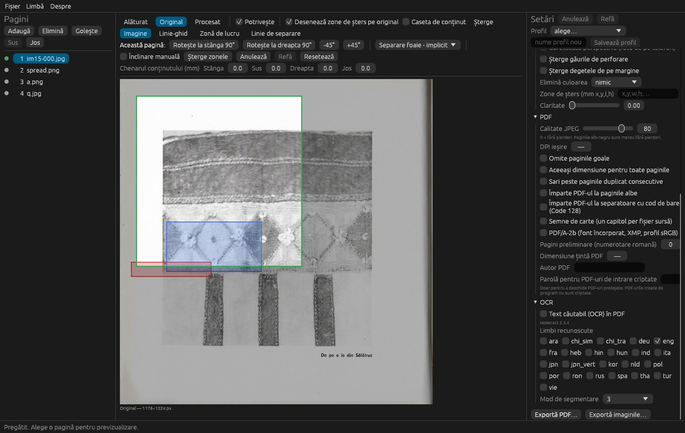
Secțiunea OCR din setări: bifa „Text căutabil (OCR) în PDF”, limbile recunoscute (cele instalate la Tesseract) și modul de segmentare. În captură era instalat Tesseract 5.3.4, de aceea apar toate limbile lui; alegerea ron am folosit-o în figura următoare.
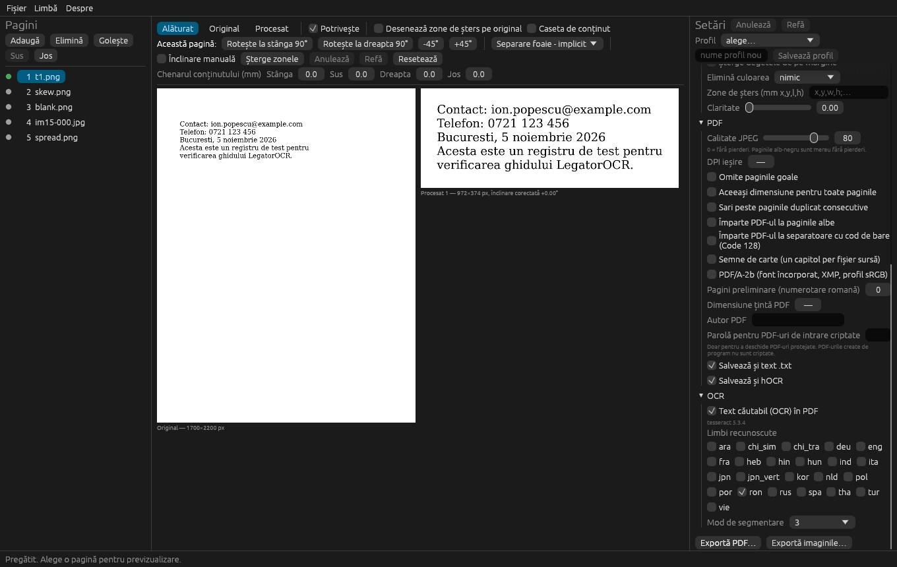
Cu OCR bifat apar și „Salvează și text .txt” și „Salvează și hOCR”. Aici limba aleasă este ron.
După export, bara de jos arată: „PDF salvat: … — 3 pagini, 36 cuvinte recunoscute”. (Exportul l-am pornit cu un mecanism de test al programului, nu din dialogul de fișiere.)
| Motor | Cum îl alegi | Note |
|---|---|---|
| Nativ (al programului) | --engine native | fără instalare, scris în Rust; model antrenat pe text sintetic, apoi ajustat pe linii dintr-o revistă românească și dintr-un manual din 1960 |
| Tesseract | --engine tesseract | program separat, vezi secțiunea 2; folosit automat când e instalat și are limba cerută (--engine auto, implicit) |
| Punte ONNX | --engine tesseract --tesseract scripts/engine-onnx.py | pentru utilizatori avansați; necesită Python, onnxruntime și modele descărcate separat |
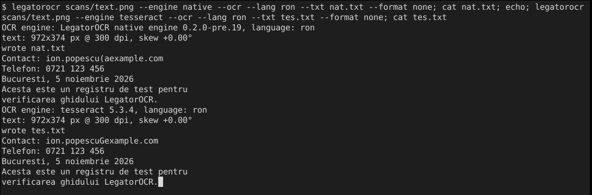
Aceeași pagină de test citită de cele două motoare. Ambele au greșit la fel: „@” a ieșit „(a” la motorul nativ și „G” la Tesseract.
S-au măsurat 8 pagini bune dintr-o revistă românească, față de un text de referință produs de ABBYY, nu corectat de om. Rata de erori pe caractere, cu diacritice (măsurătoarea originală, din ediția 0.2.0-pre.21; la o nouă măsurare în pre.26 pe aceleași 8 pagini, cu aceeași metodă, motorul nativ a dat 2,76 %; diferența față de 2,55 % nu am investigat-o):
| Motor | Erori pe caractere |
|---|---|
| Nativ | 2,55 % |
Tesseract (ron) | 4,32 % |
| OCRmyPDF (cu Tesseract) | 4,62 % |
Citit simplu: motorul nativ greșește mai puțin pe acest tip de tipar. Dar a fost ajustat pe text din aceleași surse, deci nu se poate spune că e mai bun în general. Pe alte documente, mai ales tipar vechi sau neobișnuit, poate fi mai slab decât Tesseract. Recunoașterea cuvintelor întregi este aproape egală între motoare (aproximativ 92 %).
--accurate (motorul nativ): fiecare linie este citită de trei ori (deplasată cu un pixel în sus și în jos) și probabilitățile se mediază. Este mai lent (măsurat: cu 18 % până la 74 % mai mult timp) și a ajutat doar pe paginile de revistă (eroarea pe caractere 3,66 % → 3,39 % pe 12 pagini); pe cărți și broșuri nu a schimbat nimic măsurabil. Este oprit implicit.
Lista de cuvinte românești acceptă și ortografia din 1953–1993 (cuvînt, romîn, sînt): pe cinci pagini dintr-un manual din 1960, transcrise de mână, caracterele corecte au crescut de la 99,6 % la 99,7 % și cuvintele de la 96,0 % la 96,3 %. O diferență mică, pe cinci pagini.
Cuvintele sunt despărțite la spațiile largi chiar când rețeaua nu a scris spațiu: celulele unui tabel nu mai ies lipite (CantitatePreț). Un tabel cu linii e găsit ca un singur tabel (Excel: --tables-xlsx); un tabel fără linii este încă găsit ca două tabele (stânga și dreapta), problemă nerezolvată.
Pe documentele tale, compară motoarele pe 5–10 pagini înainte de lot: scripts/compare-ocr-text.py măsoară erorile față de texte de referință pe care le ai tu.
Paginile sub 250 dpi sunt mărite automat înainte de recunoaștere.
Paginile cu ilustrații sau diagrame pot produce text fără sens în zona imaginii (Tesseract a citit o ilustrație drept text pe una din paginile măsurate). Verifică aceste zone.
Orice OCR poate inventa sau pierde cuvinte. Pentru acte, registre sau cifre, verifică prin sondaj.
| Ce vrei | Cum |
|---|---|
| PDF cu text căutabil | --pdf FISIER.pdf --ocr (interfață: Exportă PDF cu OCR bifat) |
| PDF pentru arhivare (PDF/A-2b) | --pdfa; alte părți cu --pdfa-part 1 sau 3 |
| Imagini procesate | -o FOLDER, cu --format png, jpeg sau tiff; --format none nu scrie imagini |
| Text simplu al paginilor | --txt FISIER.txt |
| hOCR | bifa „Salvează și hOCR” |
| Structură pentru accesibilitate | --tagged ro (paragrafe etichetate). Conformitatea PDF/UA nu a fost validată |
| Copie DjVu | --djvu FISIER.djvu |
| Dovadă de integritate | --checksums și --archive-package DIR, apoi --verify-sums |
| Proiect (setări și corecturi) | Fișier → Salvează proiectul (.lgr), sau --save-project; --embed-project îl ascunde în PDF |
Programul scrie PDF/A-2b cu font și profil sRGB încorporate. Conformitatea a fost verificată pe eșantioane, nu cu veraPDF pe orice ieșire. Dacă o instituție cere conformitate certificată, rulează propriul validator pe fișierele finale.
--project FISIER.ScanTailor deschide un proiect ScanTailor: lista de scanări și rotirea per imagine sunt preluate, iar înclinarea, separarea și caseta de conținut sunt găsite din nou. Cititorul a fost scris după descrierea formatului și testat pe un proiect făcut manual, nu pe fișiere din orice versiune ScanTailor.
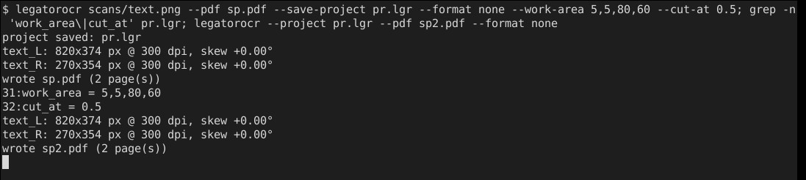
--save-project și --project: proiectul se salvează și se redeschide cu același rezultat (2 pagini). Atenție: în pre.18, --work-area și --cut-at nu se păstrau în proiect; corectat în pre.19 (verificat: proiectul salvat și redeschis dă aceleași pagini).
| Simptom | Ce să verifici |
|---|---|
| Pagina iese tăiată sau cu prea mult alb | caseta de conținut (secțiunea 4); chenarul în mm din bara „Această pagină” |
| Pagină înclinată rămâne înclinată | înclinarea maximă permisă; setează unghiul manual |
| Foaia dublu-față nu se taie unde trebuie | modul de separare al paginii: „la mijloc” sau „oprită”; din pre.18 poți trage o „Linie de separare” pe original sau folosești --cut-at 0.45 |
| Un câmp text se face roșu | formatul câmpului (secțiunea 6): milimetri pentru zone, fracții 0–1 pentru ghidaje |
| Textul OCR are greșeli | compară motoarele (secțiunea 7); verifică rezoluția; treci la Tesseract sau invers |
| Panoul „De verificat” | pagini marcate ca suspecte (goală, înclinare la limită, nimic găsit, conținut lipit de margine); nu sunt neapărat greșite, dar merită privite |
| Nu merge fereastra pe Windows sau în RDP | lipsa OpenGL 2+; încearcă driverul plăcii video |
| Aplicația macOS nu pornește | nu e semnată: clic dreapta → Open sau comanda xattr din secțiunea 2 |
Auto trapez: verificat pe foi sintetice și pe 67 de fotografii de telefon ale unei singure cărți (133 de pagini), unde a lăsat neatinse cele mai multe pagini și a redus înclinarea măsurată la restul; nimeni n-a judecat rezultatul cu ochiul pe alte cărți sau pe pagini cu imagini mari, tabele ori rânduri foarte scurte, unde poate să nu facă nimic sau prea puțin. Setările pe pagină și înclinarea liniei de tăiere au fost încercate pe foi sintetice și în teste; creionul pentru tabele face OCR-ul să citească zona ca un bloc, nu găsește celule.
Rotirea cu 90°: la o pagină cu o fotografie de ornamente (pagina 15 dintr-un PDF) un tester pe Windows a văzut rotirea sărind de la 90° la 180°. Am reprodus pe Linux o parte a problemei: în pre.18, cu „Detectează pagina culcată” bifat (implicit), programul rotea greșit cu 90° această pagină, deși originalul e drept (figura din secțiunea 4). Pragul din pre.19 era prea fragil (am descoperit între timp că o altă pagină a aceluiași PDF, pagina 13, tot se rotea greșit). În pre.20 detectorul numără doar piesele de mărimea unei litere și se abține la paginile cu poze sau cu puține cuvinte. Pe 98 de pagini de carte (rotite la 0° și 90°) și 5 pagini cu poze, rezultatul e identic cu pre.18, în afară de pagina 13 (rotită greșit în pre.18, acum dreaptă) și o pagină cu poză culcată, pe care detectorul nu mai întoarce (rămân OSD și rotirea manuală). Verificat în linia de comandă, pe Linux, pe un corpus mic. Cauza probabilă a săriturii (orientarea automată se aduna peste rotirea manuală) a fost corectată în pre.18: după un clic pe rotire pagina rămâne blocată, iar patru clicuri dau 90°, 180°, 270° și înapoi la 0° (verificat în fereastră, pe Linux). Ce a văzut exact testerul pe Windows 11 nu am putut verifica. Dacă o pagină cu poze tot e rotită greșit, debifează „Detectează pagina culcată” sau folosește --no-auto-orient.
Zona de lucru, linia de separare mutabilă, zonele de șters și de imagine, grilă de puncte, Anulează și Ctrl+Z, caseta de conținut, OCR și exportul PDF au fost încercate într-o fereastră reală pe Linux, cu mouse simulat (capturile din ghid). Redimensionarea unei zone din colț a mers în fereastră. Dialogurile native de fișiere („Exportă PDF…”, „Salvează proiect”, „Deschide proiect”) au mers cu dialogul GTK al unui portal xdg pe Linux; pe Windows și macOS nu le-am încercat. Dacă sistemul nu are niciun dialog, din pre.21 fereastra spune asta în loc să nu facă nimic (poți trage fișierele în fereastră sau folosi linia de comandă). Salvarea unui profil propriu a mers. Efectul liniei de separare l-am verificat prin teste automate, cu --cut-at și în fereastră (o foaie dublă tăiată în două pagini inegale, 524 și 674 px). La foile rotite cu 90° sau 270° (din pre.21) paginile ies una sub alta; asta e verificat doar printr-un test automat, nu în fereastră.
--save-project: în build-ul publicat pre.18, --work-area și --cut-at date în linia de comandă nu se păstrau în fișierul .lgr (găsit în verificarea acestui ghid). Corectat în pre.19. Dacă folosești pre.18, dă opțiunile din nou la --project, nu doar din proiect.
Interfața grafică nu a fost verificată de oameni pe Windows, macOS sau arm64.
Verificarea PDF/UA, factura electronică CIUS-RO și marca de timp prin HTTPS cu o autoritate reală nu au fost validate.
Pentru o copie PDF/A certificată, validatorul este al tău (de exemplu veraPDF).
Dreptul de utilizare a modelului OCR propriu (antrenat parial pe pagini cu drepturi neclarificate) este o chestiune deschisă la autor; vezi docs/audit/assets-licences.md.
Cea mai utilă contribuție este un raport de pe un sistem pe care autorul nu l-a încercat. Durează cinci minute:
Descarcă ultima ediție pentru sistemul tău.
Rulează legatorocr --doctor și copiază tot rezultatul.
Rulează o pagină pe care poți să o partajezi: legatorocr PAGINA.jpg --ocr --pdf rezultat.pdf -o pagini.
Deschide rezultat.pdf: pagina e dreaptă și decupată cum trebuie? Textul se selectează și se caută?
Trimite, ca problemă în depozitul chiuta/LegatorOCR (sau prin e-mail):
sistemul și versiunea (de exemplu Windows 11 23H2, macOS 15 arm64, Debian 12 arm64);
versiunea LegatorOCR;
rezultatul comenzii --doctor;
comanda rulată (sau setarea din interfață);
ce te așteptai și ce s-a întâmplat (text de eroare sau captură de ecran);
dacă imaginea poate fi partajată.
Nu trimite documente cu date personale. Un raport „totul a mers” este tot folositor: este singura cale prin care autorul află că un sistem funcționează.
Probleme de securitate se raportează conform SECURITY.md, nu public.